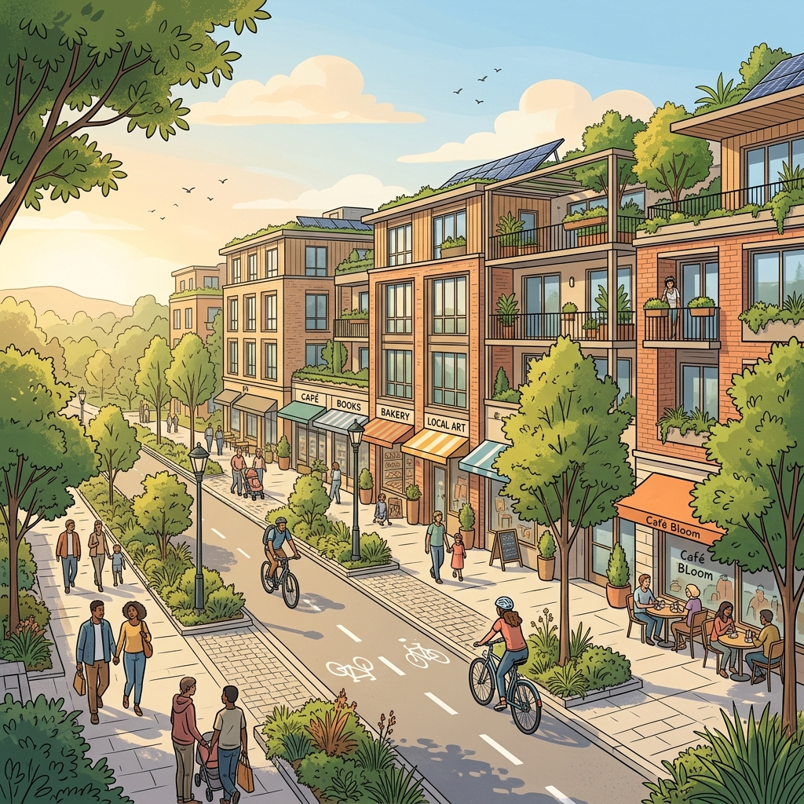
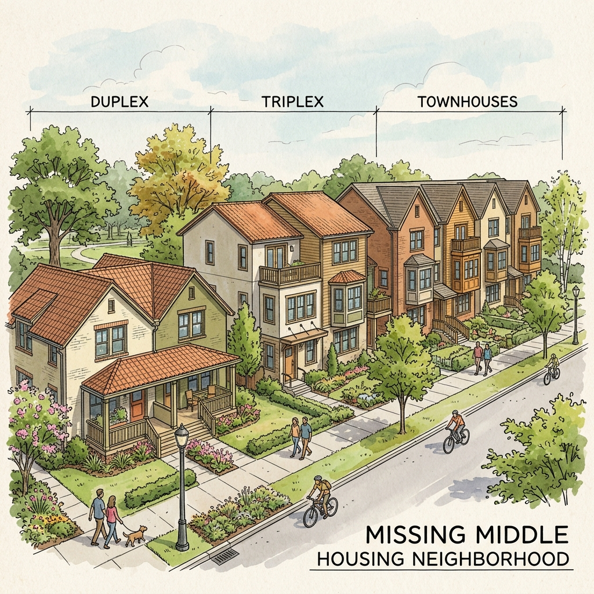
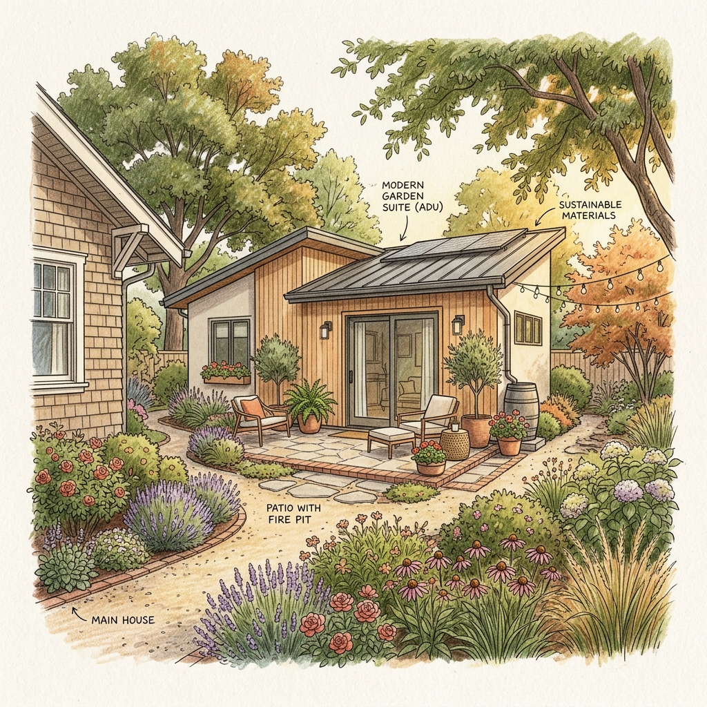

Imagine a neighborhood where you can walk to the grocery store, your children live just blocks away, and seniors can stay in their homes as they age. This isn't a dream—it is possible through smart local planning.
The Vision of "Thriving In Place"

For decades, many of our cities have been shaped by rules that push people apart. We have built sprawling suburbs that require long car commutes and single-family neighborhoods that make it difficult for anything other than one house per lot to exist. This pattern has led to increased pollution, higher housing costs, and a sense of isolation.
"Thriving In Place" is a different way of looking at our communities. It is an approach focused on upzoning—updating local land-use regulations to allow for more diversity in housing and uses within our existing neighborhoods. Instead of building new, distant suburbs, we work with the infrastructure we already have to create vibrant, walkable, and connected places.
What is Zoning and Why Does It Matter?
Zoning is essentially a set of ground rules created by local governments. These rules decide what can be built where. For example, they define which areas are for houses (residential), which are for shops (commercial), and which are for factories (industrial).
While these rules were originally designed to keep polluting factories away from homes, modern zoning has often gone much further. In many U.S. and Canadian cities, it is actually illegal to build anything other than a single-detached house on a large portion of residential land. This means you cannot easily add a small apartment in your backyard, or build a duplex next door.

The Impact of Restrictive Zoning
- Limited Housing Options: It prevents the creation of "Missing Middle" housing like townhouses and multiplexes.
- Increased Sprawl: Because we can't build enough in existing areas, cities expand outward, eating up forests and farmland.
- Car Dependency: When homes are far from shops and offices, driving becomes a necessity rather than a choice.
- Higher Costs: Low supply and high demand drive up the price of everything from rent to mortgages.
The Power of Upzoning
Upzoning is the process of changing these rules to allow for more density and variety. By allowing things like Accessory Dwelling Units (ADUs), duplexes, and mixed-use buildings, we unlock incredible benefits for everyone.

Aging in Place & Family
Upzoning allows seniors to downsize into a smaller unit on their own property or nearby. It also lets adult children live close enough to provide care and connection while maintaining independence.
Walkability & Health
When shops, cafes, and offices are integrated with housing, people walk and bike more. This active lifestyle leads to better physical health and stronger community social ties.
Climate & Environment
Compact, walkable neighborhoods use less land and energy. By reducing the need for long car trips, we directly lower carbon emissions and protect our natural surroundings.
Affordability & Equity
Increasing housing supply helps stabilize prices. Furthermore, reforming exclusionary zoning is a vital step toward making neighborhoods accessible to people of all income levels and backgrounds.
How You Can Make a Difference
The most important thing to remember is this: Local officials listen to the people who show up. Zoning is decided at the municipal level, and your voice can drive real change.
Your Action Plan
| Action | What it involves |
|---|---|
| Discover | Find your neighborhood's zoning map online. Use tools like the National Zoning Atlas. |
| Learn | Understand what is currently allowed (or forbidden) in your specific zone. |
| Speak Up | Send an email to your local representative or attend a public hearing about land use. |
| Connect | Talk to your neighbors and join local pro-housing groups to build momentum. |
Advocacy Do's and Don'ts
DO: Share personal stories about why housing matters to you. Use facts and research to support your points. Stay respectful and curious.
DON'T: Avoid aggressive or disrespectful language. Don't assume the process will be fast—it takes patience and persistence!
Real World Success Stories
Zoning reform isn't just a theoretical idea; it is happening right now in cities across North America.
Minneapolis, Minnesota
Through the Minneapolis 2040 Plan, the city eliminated single-detached-only zoning and allowed duplexes and triplexes across the city. They also removed minimum parking requirements. This bold move aimed to tackle the housing crisis head-on by encouraging more density near transit and within existing neighborhoods.
Toronto, Ontario
Toronto has implemented major changes like EHON (Expanding Housing Options in Neighbourhoods), allowing apartments up to six stories on major streets. They also legalized Garden Suites and Laneway Suites citywide, providing homeowners with more flexibility and generating much-needed affordable housing supply.
Key Terms to Know
- ADU (Accessory Dwelling Unit)
- A smaller, independent living space (like a garden suite) located on the same lot as a larger primary home.
- As-of-Right
- Development that is allowed by current rules without needing special permission or extra hearings.
- Missing Middle Housing
- Housing types—like duplexes, townhouses, and courtyard apartments—that sit between single-family homes and large apartment buildings.
- Upzoning
- Changing zoning laws to allow for more units or taller buildings on a piece of land.
- YIMBY
- Short for "Yes In My Back Yard." It refers to people who support the development of new, diverse housing in their communities.